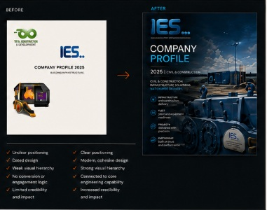
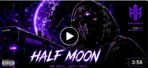
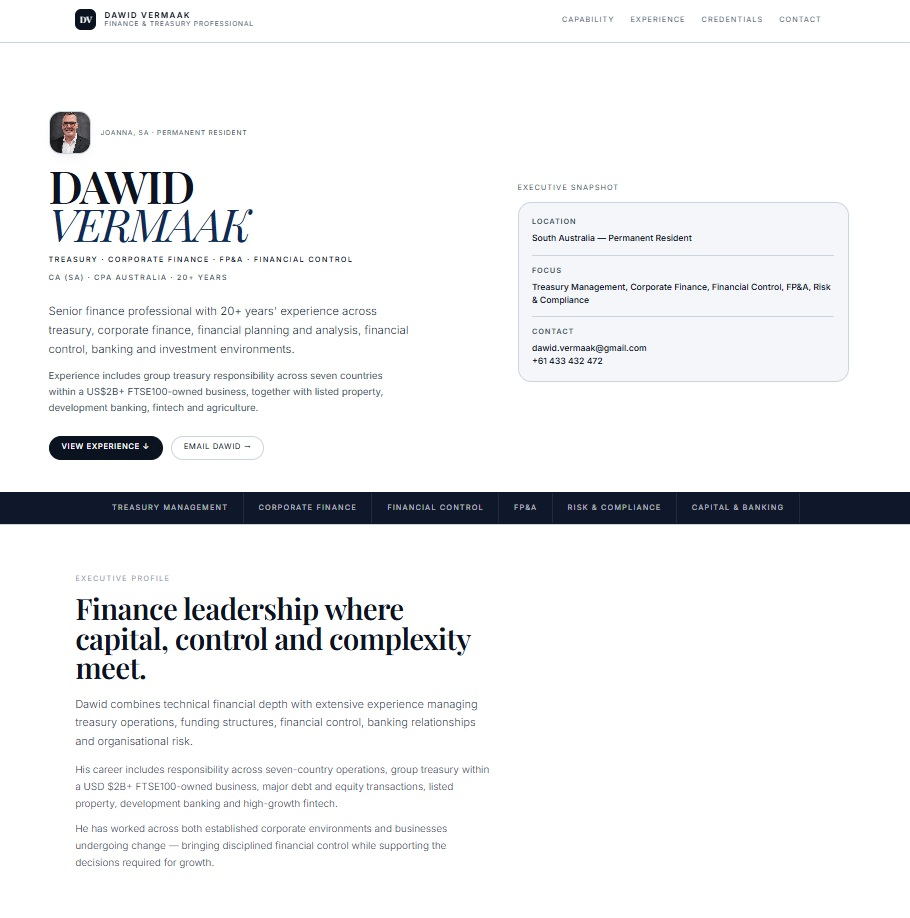
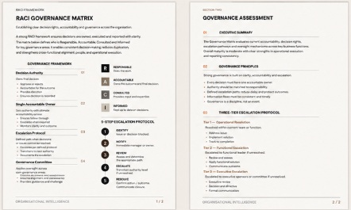
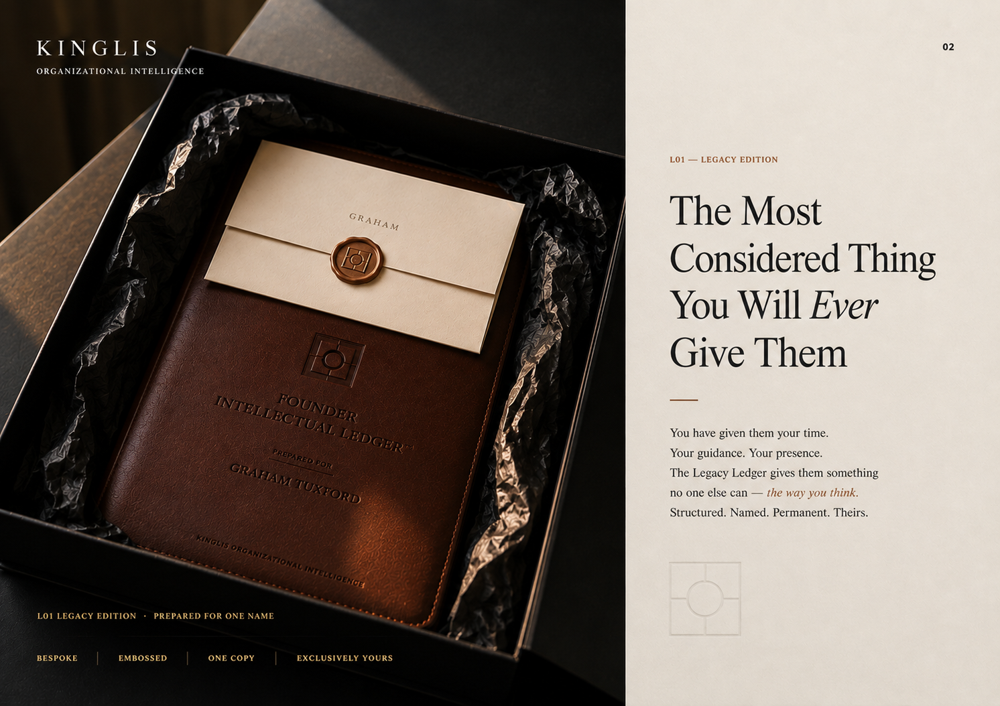

Make your business
look like it
actually should.
Remote business production studio.
We fix how your business looks. Website, documents, video — the three things people judge you on before they decide to work with you.
No agency retainer. No brief theatre. No 12-week discovery. You send what you've got, we work out what it should be.
Good businesses routinely present below the level at which they actually operate.
Three things. Done properly.
Pick the thing that's bothering you. Productized, fixed from-price.
A website that looks like the business behind it.
Clean, credible business sites built around what people need to understand, trust and do next. No template theatre.
Send us the Word monstrosity.
Profiles, governance, board packs, policies, SOPs, proposals, pitch decks, reports, CVs, LinkedIn.
You've got the footage. Or the idea.
Business video produced remotely from your footage, photos and assets — or an idea we turn into something real.
Recent work that looks like it should.
A quick strip — not case studies. Full work lives on the main site.






Send what you've got. We work it out.
Website link, doc, drive folder, Loom, voice note. Whatever exists.
We tell you what it should be. No brief theatre.
Web / document / video built remotely, properly.
One clean review round. Not 12 stakeholders.
Delivered. Looks like it actually should.
No retainer bollocks. Just done properly.
Working internationally. No studio visit required. Async, fast.
Web from $750, Document from $350, Video from $300. You know what it costs.
Pay for the thing you need. Not access to us.
We don't need a workshop to tell you your website is confusing.
Not templates. Structure + hierarchy around what people need to understand and trust.
Limited clients, referral-heavy. We'd rather be good than big.
Make it look like it actually should.
Web · Document · Video. Remote studio. Tell us what you're trying to make — we'll tell you what it should cost and how fast.